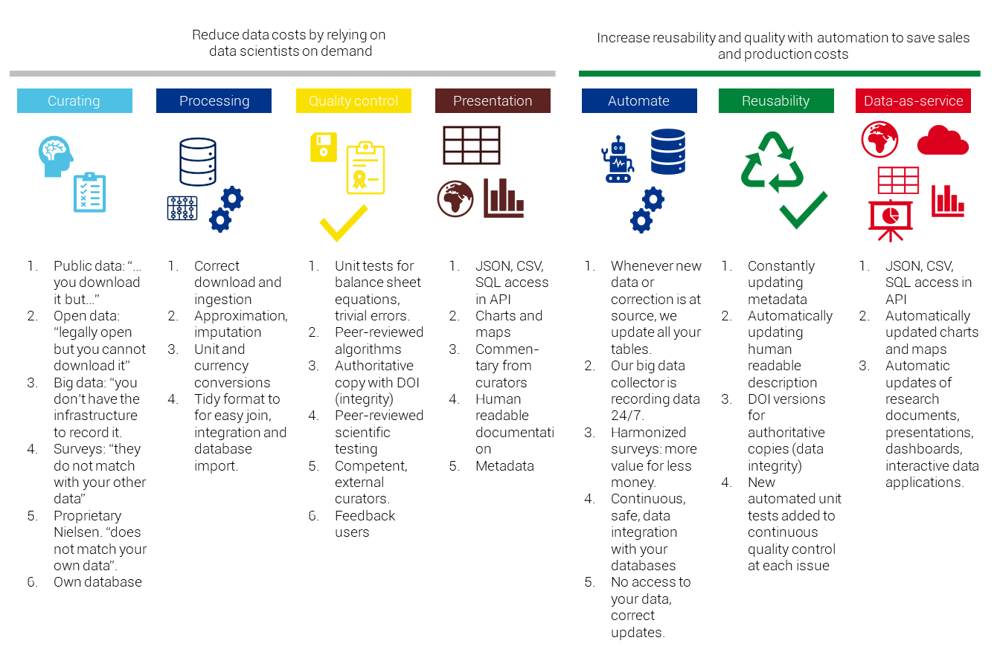

1 Application for the Datathlon Prizes: Automated Data Observatories
This year’s EU Datathlon includes three challenges. We are contesting all three of them with the same technology and knowledge management, but with different data used in a wide range of knowledge domains.
1.1 How We Add Value to Data

1.1.1 Reproducible Research
Our curatotrs help finding the best available information source. This is often open data, which is not equal to public data. Open data is a governmental or scientific data source which you can legally access. It is almost never available for direct download, and requires much processing. You could probably do this in Excel – if the data was not in various
sql,pdf,sav,csv,tsv,xlsand various other file formats.We process the data: Yes, anybody can convert from millions of euros to euros in a spreadsheet, tons to kilograms, maybe even ounces to grams, but many unit conversions are error-prone if done by humans. Not everybody can make valid currency translations (When do I use year-end USD/EUR rate? Today’s EUR/GBP? Or GBP/EUR? Annual average rate?) We do this processing in a way that conforms to the tidy data definition, which allows easy integration, joining, and importing of data into your database. While the unit conversions can be automated in Excel or PowerBI, the data tidying requires a more programatic approach.
Quality control: Our data goes through dozens of computer logical checks (Do assets and liabilities match? Do dollar and euro amounts lead to the same result?) Our algorithms go through automated and human statistical peer-review, and are open to your experts for checking, because transparency and openness allow for the best quality control. This unit testing is not really possible in Excel or Power BI, not to mention the senior supervision of such tasks. To maintain data integrity, we place an authoritative copy with a digital object identifier in the Zenodo scientific data repository. We place both our algorithms and our methods into peer-reviewed scientific publications, and our data products are checked and improved by competent experts in the field.
We produce the data and its visualization in easy to reuse, machine-readable, platform-independent formats. Just like that,
csv,json,jpg,png,doxc,epub,pdf,pptx,odt,sav, you name it, we do it.
Reproducible research is a scientific concept that can be applied to a wide range of professional designations, such as accounting, finance or the legal profession. We are applying this concept to Evidence-based, Open Policy Analysis and Professional Standards in Business, including, for example, reproducible finance in the investment process or reproducible impact assessment in policy consulting. Based on computational reproducibility we believe that the following principles should be followed: - Reviewability means that our application’s results are can be assessed and judged by our user’s experts, or experts they trust. - Reproducibility means that we provide data products and tools that allow the exact duplication of our results during assessments. This ensures that all logical steps can be verified. - Confirmability means that using our applications findings leads to the same professional results as other available software and information. Our data products use the open-source statistical programming language R. We provide details about our algorithms and methodology to confirm our results in SPSS or Stata or sometimes even in Excel. - Auditability means that our data and software is archived in a way that external auditors can later review, reproduce and confirm our findings. This is a stricter form of data retention than most organizations apply, because we do not only archive results step-by-step but all computational steps – as if your colleagues would not only save every step in Excel but also their keystrokes. Read more about this topic here.

1.1.2 Research Automation
Because every step of our data acquisition, processing, structuring, and testing is going through machines, it can be replicated any given year, month, day, or hour. Research automation means that we update our data every day (Is there new data at the source? Corrections? Known issues?) and place the current version in an API.
Continous data collection: Big data sources usually provide the user with a large quantity of insignificant data. Because of the large quantity, the data is usually not available historically: you capture it today or it is gone. You need to process data in big quantities in order to find signficiant and meaningful information. Most small enterprises and research teams do not have the engineering capactity to organize this. We do continous data collection on all sources to capture the latest updates, or corrections.
Focus on reusability: In our experience, the resuability of research and consulting work is greatly reduced by two factors, which we resolve with continous data collection and documentation:
- poor documentation (the bibliography updates and file descriptions are the least priortized tasks)
- data tables, charts, visualizations became dated then obsolete.
From tidy and open data to data-as-service: Because all our assets, including key business indicators, policy indicators, scientific replication sets, and their visualizations, as well as maps, are created by open source and reproducible software, the software can run continously. Instead of providing our users with data tables, charts and maps, we provide them with a subsription to the latest data and its latest visualizations.
1.2 Service Flow
1.2.1 Data Acquisition and Processing
We access various open governmental and open scientific sources programatically. Our programs are mainly written in the R language, but we have a growing body of software written in Python, too. We thrive to be open for both R and Python developers, and as much as possible, exploit the synergies between the more statistically oriented R language and the more genereal application-oriented Python. We welcome curators and developers in both languages.
An important aspect of our quality control is that our processing code is open and peer-reviewed. Our observatories are turning the peer-reviewed statistical software of the rOpenGov community into a continous data-as-service product. This means that we are creating collector software that is making reproducible data assets, mainly business and policy indicators. Then we are running this software daily in the cloud, and place the new data acquisitions’ authoritative copies into a scientific repository for data integrity purposes, then upload it to our API, describe it in our long form documentation, and eventually blog about the newsworthy finds on our Front-end Websites.
The entire research automation system is maintained by Reprex, a Dutch research automation startup, in open collaboration with rOpenGov and other developers.
1.2.2 Data Integrity: Authoritative Copies
We rely on a data repository to keep a final, authoritative copy of our data assets and visualizations. This repository is independent from us.
Zenodo is a semi-endorsed EU solution, originating from CERN. In the last EU budget period all EU-funded research was supposed to deposit data there, although this requirement was not often enforced. Manual deposition is in working order, and we can very easily retrieve our own data in various versions. It is also free data storage.
The Zenodo API is not very well documented, particularly for R. But it is supported both in Python and R. We have a tutorial and code on how to deposit our assets programatically via the Zen4R package. It is a bit difficult to use - it mimics “true” object oriented programming relying on R6 classes, which is extremely rarely used by R programmers.
The Dataverse is much better served, the API is better documented, and technically we could even set up our own instance (new dataverses can be installed.) The best instance is of course the original Harvard Dataverse. Currently Dataverse has no support on CRAN - the R package was just kicked out of CRAN, and it is buggy, but it can be fixed. Should there be a need, we can make a connector to Dataverse, too.
1.2.3 Automated Data Observatory API
Our observatories APIs are Datasette instances. It is a lightweight, Python-based application that turns a SQLite database into a powerful API. Our developer, Botond Vitos manages our APIs.
The indicator table contains the actual values, and the various estimated/imputed values of the indicator, clearly marking missing values, too.

The descriptive metadata is contained in the description tables.

The data transactional and processing metadata is contained in the metadata tables.

The variable labelling and unit labelling information is stored in the labelling tables.

Currently our APIs are re-freshed by an R code. We will soon add a Python collector, too.
1.2.4 Long form documentation
Our long-form documentation is based on bookdown, which relies on pandoc, rmarkdown and knitr. This handbook is also created in bookdown.

It is a very mature workflow, it produces a long-form website, and PDF, ePUB or Word versions from the API. The current automation is not operational, as we have recently included the API.
1.2.5 Front-End Websites
Our observatory’s client-facing front end is made by the static website generator hugo, which is programmed in the go language. We use the open-source Starter Hugo Academic template of wowchemy. If we win a price, we’ll certainly offer them a share!

The hugo-bookdown integration is partly supported by the R package blogdown. This is a semi-success, and while academic is a super-popular template, it is getting further and further away from blogdown. The original advantage is that it can be managed in the same workflow as the indicator generation, package documentation, the long-form documentation is a bit gone.